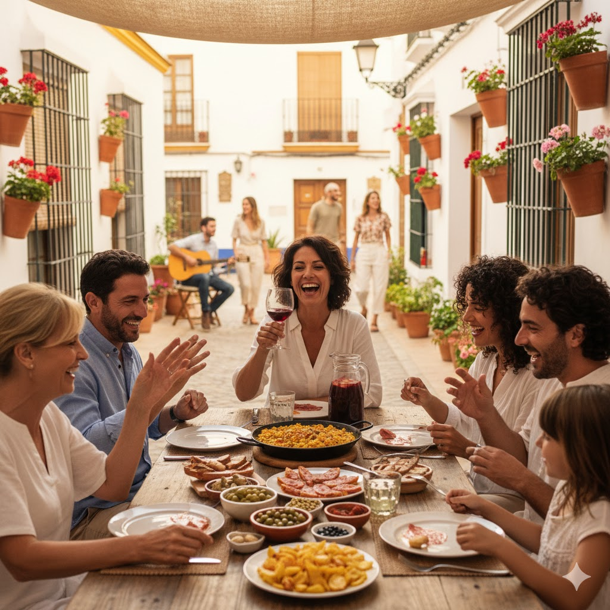

1. 欢迎来到第二课：我的日常生活
¡Hola de nuevo! 在这节课中，我们将学习如何描述每天的活动、工作、喜好和周围的环境。
- 本节课目标: 掌握描述日常生活的核心动词和句型，能够连贯地讲述“我的一天”。
- 核心语法: 现在时变位, Ser vs. Estar, Gustar, 反身动词。
2. 语法核心 (1): 现在时规则动词
西班牙语动词会根据人称（谁在做动作）发生变化，这称为“变位”。我们首先学习最基础、最常见的现在时。
A. -ar 结尾动词 (e.g., trabajar - to work)
| 人称 | 变位 | 例子 |
|---|---|---|
| Yo (我) | -o | trabajo |
| Tú (你) | -as | trabajas |
| Él/Ella/Usted (他/她/您) | -a | trabaja |
| Nosotros/as (我们) | -amos | trabajamos |
| Vosotros/as (你们) | -áis | trabajáis |
| Ellos/Ellas/Ustedes (他/她们/您们) | -an | trabajan |
例句: Yo trabajo en una empresa grande. (我在一家大公司工作。)
B. -er 结尾动词 (e.g., comer - to eat)
| 人称 | 变位 | 例子 |
|---|---|---|
| Yo (我) | -o | como |
| Tú (你) | -es | comes |
| Él/Ella/Usted (他/她/您) | -e | come |
| Nosotros/as (我们) | -emos | comemos |
| Vosotros/as (你们) | -éis | coméis |
| Ellos/Ellas/Ustedes (他/她们/您们) | -en | comen |
例句: Él come en un restaurante. (他在一家餐厅吃饭。)
C. -ir 结尾动词 (e.g., vivir - to live)
| 人称 | 变位 | 例子 |
|---|---|---|
| Yo (我) | -o | vivo |
| Tú (你) | -es | vives |
| Él/Ella/Usted (他/她/您) | -e | vive |
| Nosotros/as (我们) | -imos | vivimos |
| Vosotros/as (你们) | -ís | vivís |
| Ellos/Ellas/Ustedes (他/她们/您们) | -en | viven |
例句: Vivimos en Madrid. (我们住在马德里。)
3. 语法核心 (2): 关键不规则动词
有些动词的变位不遵循规则，需要特别记忆。Tener (拥有) 和 Ir (去) 是其中最重要的两个。
A. 动词 Tener (拥有 / to have)
| 人称 | 变位 | 例句 |
|---|---|---|
| Yo | tengo | Tengo un coche. (我有一辆车。) |
| Tú | tienes | ¿Tienes tiempo? (你有时间吗？) |
| Él/Ella/Usted | tiene | Ella tiene 30 años. (她30岁。) |
| Nosotros/as | tenemos | Tenemos una reunión. (我们有一个会议。) |
| Vosotros/as | tenéis | ¿Tenéis hambre? (你们饿了吗？) |
| Ellos/Ellas/Ustedes | tienen | Tienen que trabajar. (他们必须工作。) |
B. 动词 Ir (去 / to go)
| 人称 | 变位 | 例句 |
|---|---|---|
| Yo | voy | Voy al trabajo. (我去上班。) |
| Tú | vas | ¿Vas a la universidad? (你去大学吗？) |
| Él/Ella/Usted | va | Ella va de compras. (她去购物。) |
| Nosotros/as | vamos | Vamos a cenar. (我们去吃晚饭。) |
| Vosotros/as | vais | ¿Vais al gimnasio? (你们去健身房吗？) |
| Ellos/Ellas/Ustedes | van | Van a la playa. (他们去海滩。) |
4. 语法核心 (3): Ser vs. Estar
这两个动词都表示“是”，但用法截然不同。理解它们的区别是掌握西班牙语的关键。
A. 动词 Ser (本质 / to be - permanent)
用于描述事物的**本质、身份、国籍、职业、时间、日期、所有权**等相对不变的属性。
| 人称 | 变位 | 例句 |
|---|---|---|
| Yo | soy | Yo soy ingeniero. (我是工程师。) |
| Tú | eres | Tú eres de China. (你是中国人。) |
| Él/Ella/Usted | es | Hoy es lunes. (今天是星期一。) |
| Nosotros/as | somos | Nosotros somos amigos. (我们是朋友。) |
| Vosotros/as | sois | Vosotros sois estudiantes. (你们是学生。) |
| Ellos/Ellas/Ustedes | son | Ellos son altos. (他们很高。) |
B. 动词 Estar (状态 / to be - temporary/location)
用于描述事物的**位置、状态、感受、健康状况**等相对临时的属性。
| 人称 | 变位 | 例句 |
|---|---|---|
| Yo | estoy | Estoy en casa. (我在家。) |
| Tú | estás | ¿Cómo estás? (你好吗？) |
| Él/Ella/Usted | está | El café está caliente. (咖啡是热的。) |
| Nosotros/as | estamos | Estamos cansados. (我们很累。) |
| Vosotros/as | estáis | ¿Dónde estáis? (你们在哪里？) |
| Ellos/Ellas/Ustedes | están | Ellos están trabajando. (他们正在工作。) |
5. 语法核心 (4): 表达喜好 - 动词 Gustar
Gustar (喜欢) 是一个特殊的动词，它的主语是“被喜欢的事物”，而不是“喜欢的人”。
A. 基本结构
(A mí) me gusta + 单数名词 / 动词原形
(A ti) te gusta + 单数名词 / 动词原形
(A él/ella/usted) le gusta + 单数名词 / 动词原形
(A nosotros/as) nos gusta + 单数名词 / 动词原形
(A vosotros/as) os gusta + 单数名词 / 动词原形
(A ellos/ellas/ustedes) les gusta + 单数名词 / 动词原形
B. 例句 (Ejemplos)
| 例句 | 含义 |
|---|---|
Me gusta el café. | 我喜欢咖啡。 |
Te gusta leer. | 你喜欢阅读。 |
Nos gusta la música. | 我们喜欢音乐。 |
Les gustan los libros. | 他们喜欢书。（注意：如果喜欢的是复数名词，gustar 也要用复数形式 gustan） |
6. 语法核心 (5): 反身动词与日常作息
反身动词表示动作的发出者和承受者是同一个人，通常与反身代词一起使用。
A. 常用反身动词 (Verbos Reflexivos Comunes)
| 动词 | 含义 | 例句 |
|---|---|---|
levantarse | 起床 | Me levanto a las siete. (我七点起床。) |
ducharse | 洗澡 | Te duchas por la mañana. (你早上洗澡。) |
acostarse | 睡觉 | Se acuesta tarde. (他睡得很晚。) |
B. 反身代词 (Pronombres Reflexivos)
| 人称 | 代词 |
|---|---|
| Yo (我) | me |
| Tú (你) | te |
| Él/Ella/Usted (他/她/您) | se |
| Nosotros/as (我们) | nos |
| Vosotros/as (你们) | os |
| Ellos/Ellas/Ustedes (他/她们/您们) | se |
C. 对比：反身动词 vs. 非反身动词
通过对比，理解动作是作用于自身还是作用于他人/他物。
| 例句 | 含义 |
|---|---|
Yo lavo el coche. | 我洗车。(动作作用于“车”) |
Yo me lavo las manos. | 我洗手。(动作作用于“我自己的手”，所以用反身动词) |
7. 语法核心 (6): 情态动词
情态动词通常与另一个动词的原形一起使用，表达能力、意愿或义务。
A. Poder (能够 / to be able to)
| 人称 | 变位 | 例句 |
|---|---|---|
| Yo | puedo | No puedo ir. (我不能去。) |
| Tú | puedes | ¿Puedes ayudarme? (你能帮我吗？) |
B. Querer (想要 / to want)
| 人称 | 变位 | 例句 |
|---|---|---|
| Yo | quiero | Quiero un café. (我想要一杯咖啡。) |
| Él/Ella/Usted | quiere | Ella quiere viajar. (她想旅行。) |
C. Tener que (必须 / to have to)
| 人称 | 变位 | 例句 |
|---|---|---|
| Yo | tengo que | Tengo que estudiar. (我必须学习。) |
| Nosotros/as | tenemos que | Tenemos que irnos. (我们必须走了。) |
8. 文化角：西班牙人的作息
了解西班牙独特的工作和生活节奏，将帮助你更好地融入当地生活和职场。
- 工作日 (Jornada Laboral): 西班牙的工作日通常从上午9点左右开始，但可能会持续到晚上7-8点。这中间包含一个较长的午休时间。
- 午餐 (Almuerzo): 通常在下午2-3点，是西班牙人一天中最重要、最丰盛的一餐。许多人会利用这段时间与家人或朋友共进午餐。
- 晚餐 (Cena): 时间很晚，通常在晚上9-10点，甚至更晚。这与许多其他国家有显著不同。
- 午休 (Siesta): 传统的“午睡”在现代大城市的工作环境中已不常见，但“午休”的概念依然存在，通常演变为午餐后的短暂休息或社交时间。小商店仍可能在午休时段关门。
- 社交生活 (Vida Social): 西班牙的社交活动和夜生活开始得很晚。晚上9-11点是酒吧和餐厅最热闹的时候，夜店甚至会开到凌晨。餐后的“sobremesa”（餐桌闲聊）是重要的社交环节。
- 工作与生活平衡 (Conciliación): 西班牙文化非常重视工作与生活的平衡，家庭和个人幸福是优先考虑的因素。
9. 词汇: 我的日常生活
掌握这些词汇，你就能更好地描述自己的一天和周围的世界。
A. 日常活动 (Actividades Diarias)
| Español | English | 中文 |
|---|---|---|
despertarse | to wake up | 醒来 |
desayunar | to have breakfast | 吃早餐 |
trabajar | to work | 工作 |
comer | to eat (lunch/dinner) | 吃午餐/晚餐 |
estudiar | to study | 学习 |
cenar | to have dinner | 吃晚餐 |
dormir | to sleep | 睡觉 |
B. 地点与交通 (Lugares y Transporte)
| Español | English | 中文 |
|---|---|---|
la casa | house/home | 家 |
la oficina | office | 办公室 |
la universidad | university | 大学 |
el coche | car | 汽车 |
el autobús | bus | 公交车 |
el metro | subway/metro | 地铁 |
C. 食物与饮料 (Comida y Bebida)
| Español | English | 中文 |
|---|---|---|
el café | coffee | 咖啡 |
el agua | water | 水 |
la fruta | fruit | 水果 |
el pan | bread | 面包 |
la cena | dinner | 晚餐 |
10. 闪卡练习
点击下方的卡片来翻转并查看释义。
11. 随堂测验
1. 选择正确的动词变位: Yo ____ (trabajar) en la oficina.
2. 选择正确的反身代词: Tú ____ (ducharse) por la mañana.
3. 选择正确的动词: Nosotros ____ (tener) una reunión.
4. 选择正确的动词: Ella ____ (ir) a la universidad.
5. 选择正确的动词 (Ser/Estar): El café ____ caliente.
6. 选择正确的动词 (Ser/Estar): Yo ____ ingeniero.
7. 选择正确的动词: Me ____ (gustar) el pan.
8. 选择正确的动词: Yo ____ (poder) hablar español.
9. "desayunar" 的意思是?
10. "la oficina" 的意思是?
12. 综合情景对话 (Diálogo Integrado)
两位同事（赵文清和Ana）在办公室的茶水间聊天，运用本课所学知识。
Ana: ¡Hola Wenqing! ¿Cómo estás?
Wenqing: ¡Hola Ana! Estoy un poco cansada. Tengo que terminar un informe hoy.
Ana: ¿Ah sí? ¿Quieres un café?
Wenqing: Sí, por favor. Me gusta mucho el café.
Ana: ¿Vas a la reunión a las tres?
Wenqing: Sí, voy a la reunión. Después, tengo que estudiar español.
Ana: ¡Qué trabajador eres! (你真勤奋！)
13. 总结与课后任务
恭喜你完成了第二节课！你已经掌握了描述日常生活的关键。
本节课回顾 (Resumen)
- 我们学习了现在时规则动词的变位。
- 我们掌握了反身动词和日常作息的表达。
- 我们深入理解了
Ser和Estar的区别。 - 我们学会了用
Gustar表达喜好。 - 我们掌握了
Tener和Ir的用法。
课后任务 (Tarea)
- 录音作业: 录制一段音频，描述你的一天，至少包含5个本课学习的动词。
- 书面作业: 完成一份填空练习，巩固
Ser和Estar的用法。 - 探索任务: 访问一个西班牙语新闻网站，找出至少3个本课学习的词汇或动词变位，并截图。